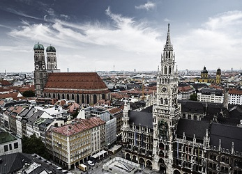

переводчик немецкого и английского
в Мюнхене, Германии и Европе
заверенные переводы

Главная страница
Полина Спирина – устный и письменный переводчик в Мюнхене и Баварии- немецкий
- английский
- русский
Вы планируете поездку в Германию и Вам необходимы услуги профессионального переводчика для участия в выставке, проведения деловых переговоров или презентации компании? Вам нужен заверенный перевод дипломов, свидетельств или иных документов для предоставления в официальные ведомства Мюнхена и Баварии? Вы ищете не только профессионального переводчика, но и надежного человека для решения проблем здоровья, покупки недвижимости или достижения иных целей? Доверьте Вашу коммуникацию и реализацию Ваших целей компетентному специалисту.
Я буду рада ответить на все Ваши вопросы и предложить оптимальное решение, исходя из Ваших желаний и потребностей.
© Polina Spirina 2005-2015